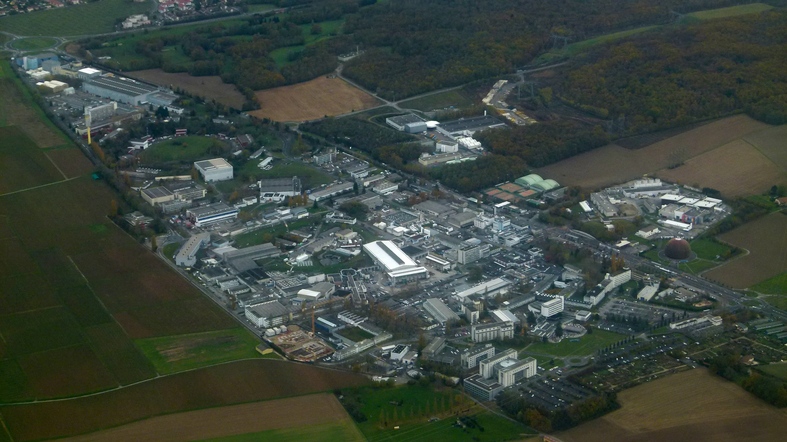
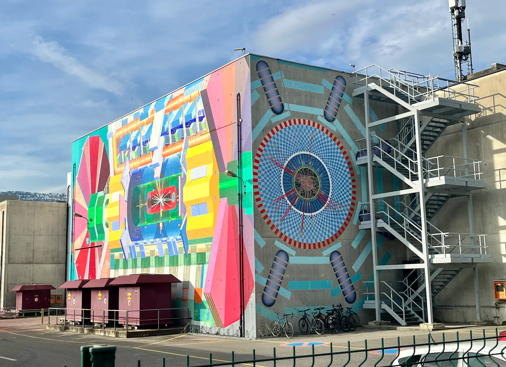
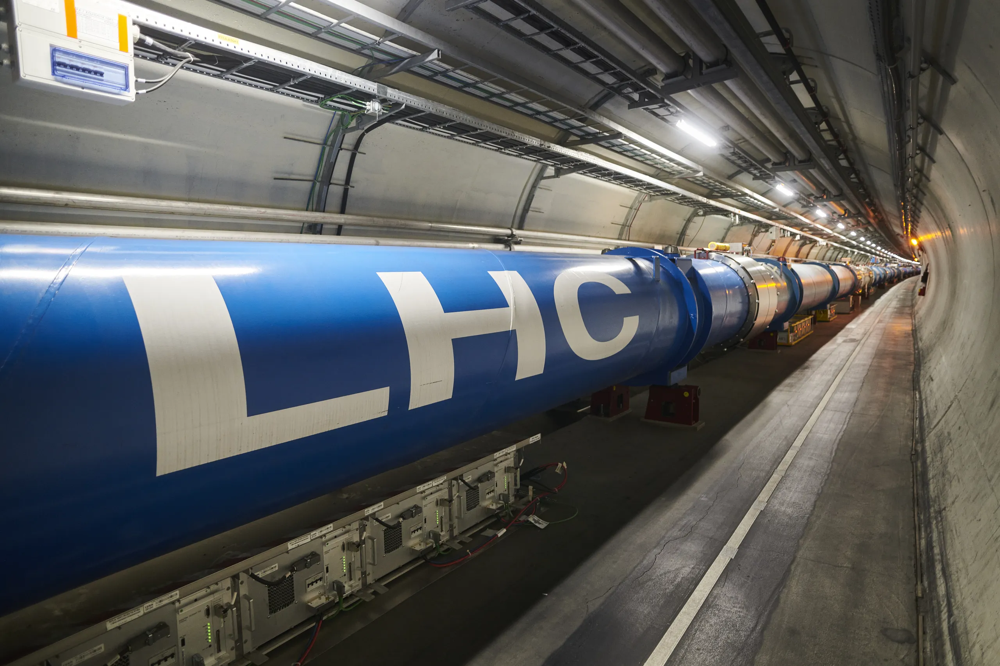
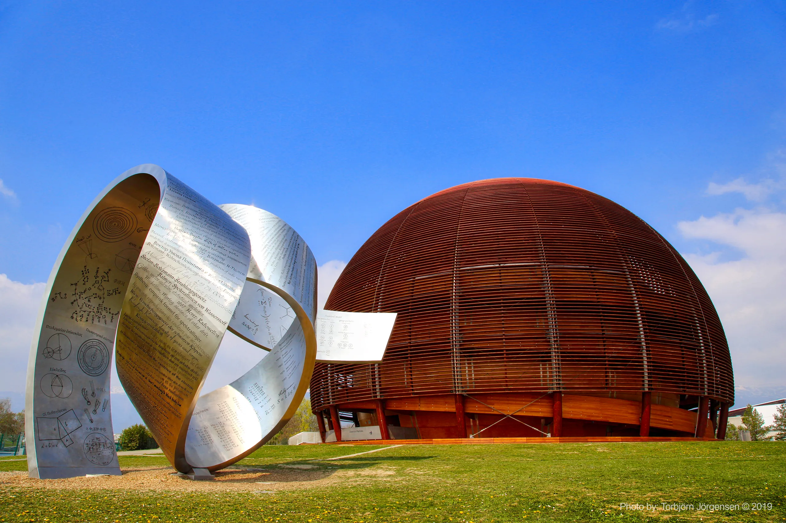
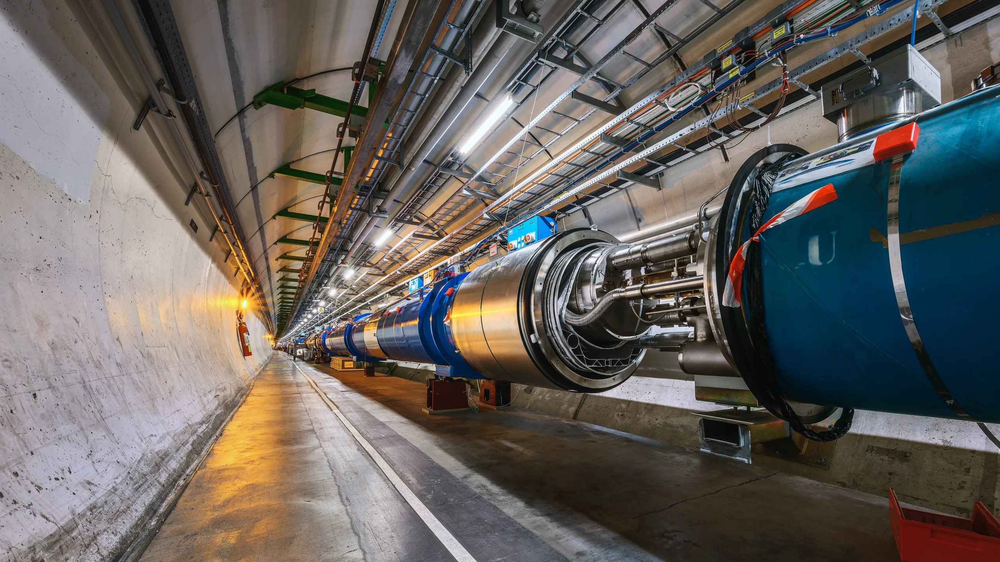
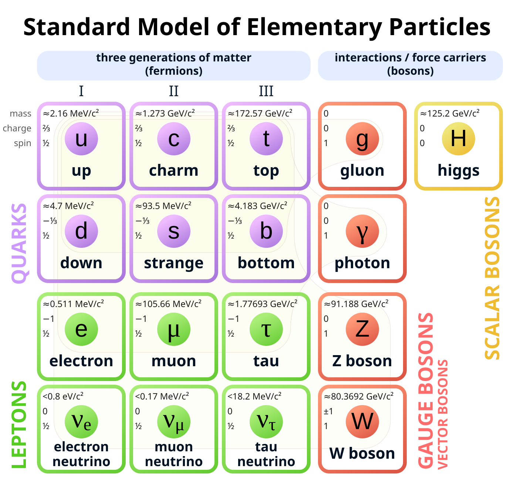
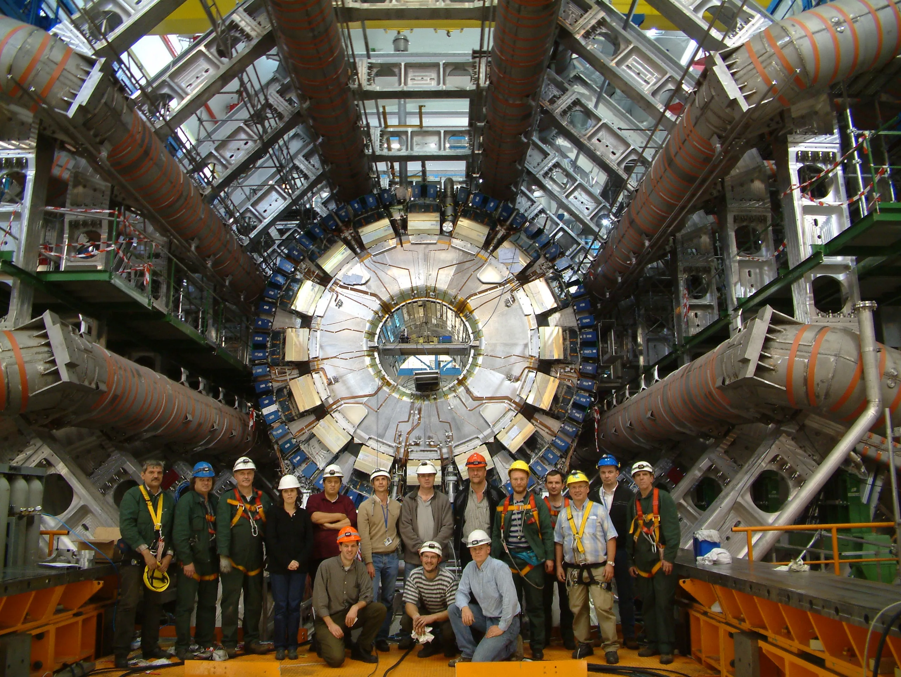
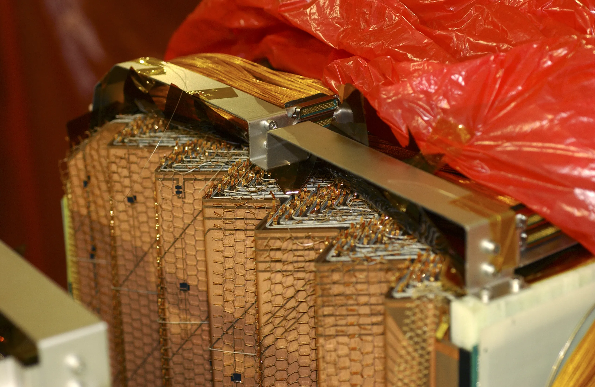

CERN & the ATLAS Experiment
The world's foremost particle physics laboratory and the experiment where NIPS-CERN makes its scientific contributions, from calorimetry instrumentation to event visualisation.




What is CERN?
Founded on 29 September 1954, CERN, the European Organization for Nuclear Research (Conseil Européen pour la Recherche Nucléaire), is the world's foremost laboratory for particle physics. Located at the Franco-Swiss border near Geneva, Switzerland, it brings together more than 17,500 people of some 110 nationalities, with 25 Member States and 11 Associate Member States, Brazil among them since 2024, contributing to its operation and scientific programme.
CERN's primary mission is to investigate the fundamental structure of matter by accelerating particles to extremely high energies and studying the results of their collisions. The organisation has produced a succession of increasingly powerful accelerators: the Synchrocyclotron (1957), the Proton Synchrotron (1959), the Super Proton Synchrotron (1976), the Large Electron–Positron Collider (LEP, 1989–2000), and the current flagship, the Large Hadron Collider (LHC, 2008–present).
Beyond particle physics, CERN is home to transformative technological contributions: Tim Berners-Lee invented the World Wide Web at CERN in 1989 as a means for scientists to share information; the GRID computing infrastructure pioneered distributed computing at petabyte scale; and CERN's accelerator technology underpins medical applications such as proton therapy for cancer treatment.
CH-1211 Genève 23

The Large Hadron Collider
The Large Hadron Collider (LHC) is the most complex scientific instrument ever built. A circular accelerator with a circumference of 27 kilometres, it is buried between 45 and 170 metres underground beneath the Swiss and French countryside near Geneva. At its core, two beams of protons, or heavy ions, travel in opposite directions in a near-perfect vacuum, guided by 1,232 superconducting dipole magnets cooled to −271.3 °C (1.9 K), colder than outer space, using superfluid helium.
Each proton beam carries an energy of up to 6.8 TeV (Run 3), for a combined centre-of-mass collision energy of 13.6 TeV, a record set in 2022. Proton bunches complete approximately 11,245 laps per second, close to 99.9999991% of the speed of light. At the four interaction points where the beams cross, the resulting collisions are detected by the major experiments: ATLAS, CMS, ALICE, and LHCb.
The LHC has operated across three physics runs: Run 1 (2010–2012, 7–8 TeV), during which the Higgs boson was discovered; Run 2 (2015–2018, 13 TeV), which collected approximately 150 fb⁻¹ of proton–proton collision data per experiment; and Run 3 (2022–2026, 13.6 TeV), which closed at the start of July 2026. Long Shutdown 3 now runs for some 47 months, and the High-Luminosity LHC starts up in June 2030 with Run 4, raising luminosity by a factor of five to ten.
| Parameter | Value |
|---|---|
| Circumference | 26,659 m (~27 km) |
| Tunnel depth | 45–170 m underground |
| Operating temperature | 1.9 K (−271.3 °C) |
| Peak collision energy | 13.6 TeV (Run 3) |
| Proton speed | 99.9999991% of c |
| Dipole magnets | 1,232 (NbTi superconducting, ~8.3 T) |
| Quadrupole magnets | 392 (beam focusing) |
| Beam crossing rate | 40 MHz (~25 ns between bunches) |
| Peak luminosity (Run 3) | 2 × 10³⁴ cm⁻² s⁻¹ |
| Interaction points | 4 (ATLAS, CMS, ALICE, LHCb) |

The Four Main LHC Experiments
| Experiment | Full Name | Physics Focus | Key Facts |
|---|---|---|---|
| ATLAS | A Toroidal LHC Apparatus | General-purpose: Higgs physics, BSM searches, top quark, B-physics, heavy ions | 46 m long · 25 m tall · 7,000 t · 5,500+ members from 170+ institutions in 40 countries |
| CMS | Compact Muon Solenoid | General-purpose: complementary to ATLAS with different detector technology; co-discovered the Higgs in 2012 | 21 m long · 15 m tall · 14,000 t · 6 T solenoid, the strongest ever built |
| ALICE | A Large Ion Collider Experiment | Quark-gluon plasma (QGP) in Pb–Pb collisions, studying the state of matter microseconds after the Big Bang | 16 m long · 16 m tall · 10,000 t · 30+ participating countries |
| LHCb | Large Hadron Collider beauty | CP violation and matter–antimatter asymmetry via B-meson decays, rare decays of beauty and charm hadrons | 21 m long · 10 m tall · 5,600 t · forward spectrometer design |

Inside the ATLAS Detector
ATLAS is a cylindrical general-purpose detector 46 metres long and 25 metres in diameter, weighing 7,000 tonnes. It is structured as a series of concentric shells around the LHC beampipe, each designed to measure different particle properties. The detector is built around a solenoidal magnet (2 T) and a system of toroidal magnets, enabling precise momentum measurements.
The innermost subdetector tracks the trajectories of charged particles. It consists of three subsystems: the Insertable B-Layer (IBL) and Pixel Detector (closest to the beam), the Semiconductor Tracker (SCT, silicon microstrip layers), and the Transition Radiation Tracker (TRT, drift tubes). The Inner Detector operates within a 2 T solenoidal magnetic field and covers the pseudorapidity range |η| < 2.5.
Surrounding the solenoid, the Liquid Argon (LAr) electromagnetic calorimeter measures the energy of electrons and photons with fine granularity. Its accordion-shaped lead/stainless steel absorber structure, filled with liquid argon at 87 K, achieves an energy resolution of approximately σ_E/E ≈ 10%/√E ⊕ 0.7%. It covers |η| < 3.2 and also provides hadronic energy measurement in the forward region (|η| 3.1–4.9).
The CGV-WEB tool developed at NIPS-CERN renders the LAr barrel geometry cell-by-cell, enabling direct visualisation of energy deposits in the accordion structure.
The Tile Calorimeter (TileCal) is a sampling hadronic calorimeter using scintillating tiles embedded in a steel absorber structure. It covers the central pseudorapidity region |η| < 1.7, segmented into three longitudinal layers and approximately 10,000 cells read out by photomultiplier tubes. Each cell is read out individually, producing analogue pulse signals digitised and processed by the trigger and data acquisition system (TDAQ). The energy resolution is approximately σ_E/E ≈ 50%/√E ⊕ 3%.
NIPS-CERN direct contribution: The UFJF group participates in TileCal operations, calibration, and signal processing development. Research at NIPS-CERN investigates Optimal Filtering (OF) algorithms implemented in FPGA fabric for the free-running trigger readout, a key challenge for the Phase-II ATLAS upgrade. The CGV-WEB visualiser represents TileCal geometry as three radial layers (A, BC, D) across 64 azimuthal sectors, totalling ~5,760 barrel cells.
The Hadronic Endcap Calorimeter complements TileCal in the forward region, covering 1.5 < |η| < 3.2. It consists of two independent wheels per endcap, each with two longitudinal sections, using copper absorber plates and liquid argon as active material. The HEC uses a parallel-plate geometry with 3 mm gaps, providing hadronic coverage with energy resolution σ_E/E ≈ 70%/√E ⊕ 6%.
The outermost and largest subsystem of ATLAS, the Muon Spectrometer (MS) measures the momentum of muons that traverse the calorimeters. It operates in the magnetic field of three large superconducting air-core toroidal magnets. The MS uses four detector technologies: Monitored Drift Tubes (MDT), Cathode Strip Chambers (CSC), Resistive Plate Chambers (RPC), and Thin Gap Chambers (TGC), covering the range |η| < 2.7.



Trigger & Data Acquisition
The LHC delivers proton bunch crossings at 40 MHz, 40 million collisions per second. ATLAS cannot read out and store every event: the raw data rate would exceed 60 terabytes per second. Instead, a multi-level trigger system selects only the most physically interesting events for permanent storage.
The hardware-based Level-1 (L1) trigger operates in real time within a fixed latency of 2.5 µs, using coarse-granularity information from the calorimeters and muon detectors to reduce the rate from 40 MHz to approximately 100 kHz. A software-based High-Level Trigger (HLT) running on a large CPU farm then reduces this to around 1 kHz, the events that are written to permanent storage for physics analysis.
For the HL-LHC era, the ATLAS Phase-II upgrade replaces this chain with a single-level hardware trigger (L0) reading out at up to 1 MHz within a 10 µs latency, and TileCal moves to a free-running readout in which every sample is streamed off-detector continuously. NIPS-CERN research takes direct part in this innovation, which enables more flexible triggering strategies for the high-luminosity data.
| Stage | Rate (output) | Technology | Latency |
|---|---|---|---|
| LHC crossing rate | 40 MHz | — | 25 ns per bunch |
| Level-1 Trigger | ~100 kHz | FPGA hardware | ≤ 2.5 µs |
| High-Level Trigger | ~1 kHz | CPU farm | O(200 ms) |
| Permanent storage | ~1 kHz | CERN tape archive | — |

NIPS-CERN's Contribution to ATLAS
The UFJF group at NIPS-CERN, led by Prof. Dr. Luciano Manhães de Andrade Filho, participates in the ATLAS Collaboration through research lines that span hardware, firmware and software:
Since 13 March 2024, Brazil is an Associate Member State of CERN, the first in the Americas. Brazilian participation in the LHC experiments runs through networks such as the INCT CERN-Brasil, of which this laboratory is part. The group's own history at CERN begins earlier still, in the mid-2000s, with the production and quality control of multiwire proportional chambers for the LHCb muon system.
TMDB, the boards that hunted muons
The Tile Muon Digitizer Board, designed by Prof. Luciano Manhães de Andrade Filho and funded by FAPERJ, was projected, produced and commissioned entirely in Brazil. The TileCal community recognises it as one of the country's most significant contributions to ATLAS. Each board received 32 analogue signals from TileCal's outermost cells over 75 metres of cable, digitised them at 40 MHz and estimated their energy on an FPGA in real time, so the muon chambers could ask the calorimeter to confirm what they thought they saw. In the trigger from 2018, the TileMuon coincidence cut the fake-muon rate in the endcap region and returned 6% of the experiment's trigger bandwidth to physics. The boards operated for eleven years, with a member of the group permanently at CERN, until their retirement with the HL-LHC electronics replacement. The full story is told in the news section.
Energy Reconstruction on FPGA
Two decades of real-time signal processing for calorimetry under pile-up: optimal filtering, matched filters, deconvolution by pseudoinverse and sparse methods, Wiener filtering with pole-zero cancellation, and lately convolutional neural networks, all implemented in FPGA fabric within the latency constraints of the TileCal readout and the free-running Phase-II architecture. The same line now contributes to the high-level-synthesis firmware upgrade of the ATLAS Liquid Argon digital trigger back-end.
CGV-WEB, the Calorimeter Geometry Viewer
A line that starts with a ROOT-based 3D event display in 2007 and arrives at CGVWeb: a browser-based visualisation platform that renders the full TileCal, LAr, and HEC geometry cell-by-cell in Rust and WebAssembly, letting physicists inspect collision events without installing anything. It has run on the screens of the ATLAS control room itself, and is freely accessible at nipscern.com/projects/cgv.
SAPHO and hardware prototyping
The SAPHO processor ecosystem, developed entirely at NIPS-CERN, provides an environment for rapid hardware prototyping and hardware–software co-design. SAPHO supports the development and validation of digital signal processing circuits intended for detector front-end electronics, making it a practical tool for ATLAS R&D work.
Data Analysis & Simulation
Members of NIPS-CERN participate directly in ATLAS physics analyses and Monte Carlo simulation workflows, including calorimeter-level studies of jet energy calibration, signal shape modelling, and machine-learning-based event classification. Graduate and undergraduate students work alongside CERN scientists, including during extended visits to CERN in Geneva.

What a collision looks like to the electronics
A cell of the calorimeter answers a particle with one shaped pulse, and the readout keeps seven samples of it. Everything the laboratory builds lives inside this picture.
-
150 ns
The front-end shapes the cell's signal into a pulse of fixed width, the same shape every time, whatever particle made it. Its height is the energy that was deposited.
-
7 × 25 ns
The pulse is digitised at 40 MHz and the readout keeps seven samples. This is the entire record of the event in that cell: seven numbers, and the height has to be found among them.
-
+50 ns
Bunches cross every 25 ns, so the next collision arrives before this pulse has finished. Its signal rides on the same window, and the seven samples are no longer the pulse: they are the sum. This is pile-up, and it gets worse with luminosity.
-
Â
The amplitude is recovered by a weighted sum of the samples, with the weights computed so that the answer is right despite the deformation. It runs in an FPGA, in real time, for ten thousand channels at once. Optimal filtering, deconvolution and neural estimators for this problem are what the group's twenty years of papers are about.
Key Milestones
Twelve European states ratify the convention establishing CERN. The first director-general is Felix Bloch.
UA1 and UA2 experiments at the SPS collider confirm the carriers of the weak force. Carlo Rubbia and Simon van der Meer awarded the Nobel Prize in Physics 1984.
Tim Berners-Lee proposes an information management system at CERN. The first web server and browser are developed at CERN.
The LEAR (Low Energy Antiproton Ring) experiment produces the first atoms of antihydrogen, the antimatter counterpart of the simplest atom.
The Large Hadron Collider circulates its first beam on 10 September 2008, beginning a new era of particle physics.
ATLAS and CMS jointly announce the observation of a new boson consistent with the Standard Model Higgs at 125 GeV on 4 July 2012. François Englert and Peter Higgs awarded the Nobel Prize in Physics 2013.
The LHC begins its third run at 13.6 TeV centre-of-mass energy, a new world record. NIPS-CERN research contributes to the TileCal free-running trigger studies for the Phase-II upgrade.
The ATLAS Collaboration, including members of NIPS-CERN, receives the 2025 Breakthrough Prize in Fundamental Physics, recognising decades of contributions to particle physics at the LHC.
The Future Circular Collider
CERN's boldest proposal for the post-LHC era: a 91-kilometre ring that will extend humanity's reach into fundamental physics by an order of magnitude.
The Future Circular Collider is CERN's study for what follows the LHC once its high-luminosity phase is over: a ring of 90.7 km, more than three times the present one, at an average depth of 200 metres, with eight surface points, one in Switzerland and seven in France.
It is planned in two stages. The first is an electron–positron machine built for precision, a Higgs factory that would measure the Higgs, the Z, the W and the top quark far more finely than anything running today. The tunnel could then be converted for protons, at collision energies up to 100 TeV, to look directly for physics the LHC cannot reach.
The Feasibility Study was completed in spring 2025. A decision by the Member States is expected around 2028, with civil engineering following in the early 2030s and start-up in the late 2040s.